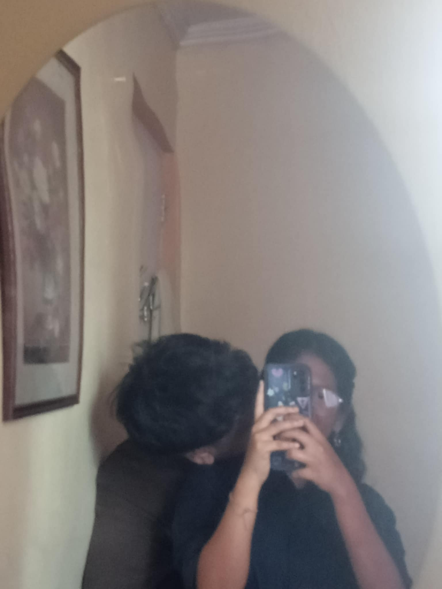
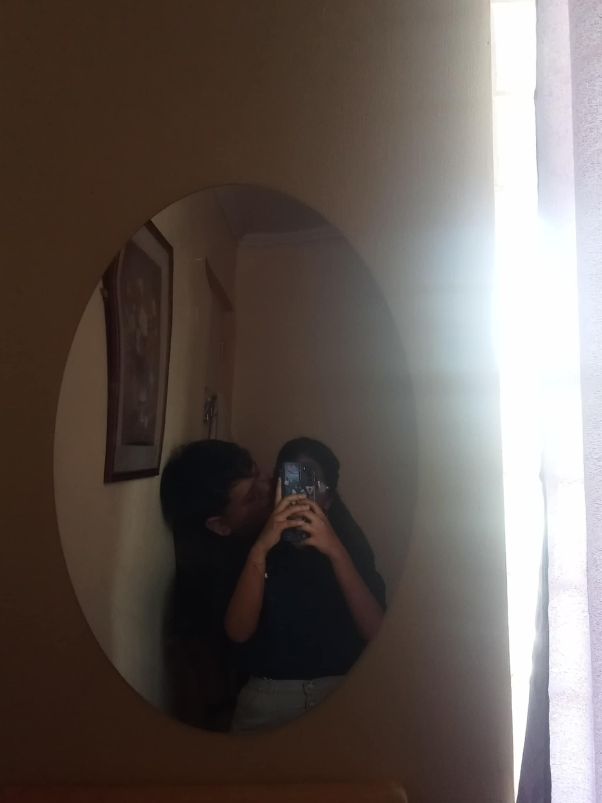

Tap the gift to see your flower 🌸
Unmoving Flowers

Succisa Pratensis
Succisa Pratensis blooms in rough fields
Through uneven grounds and misunderstandings, Some things stay without loud reasons

Weathering the storm

Through and Through